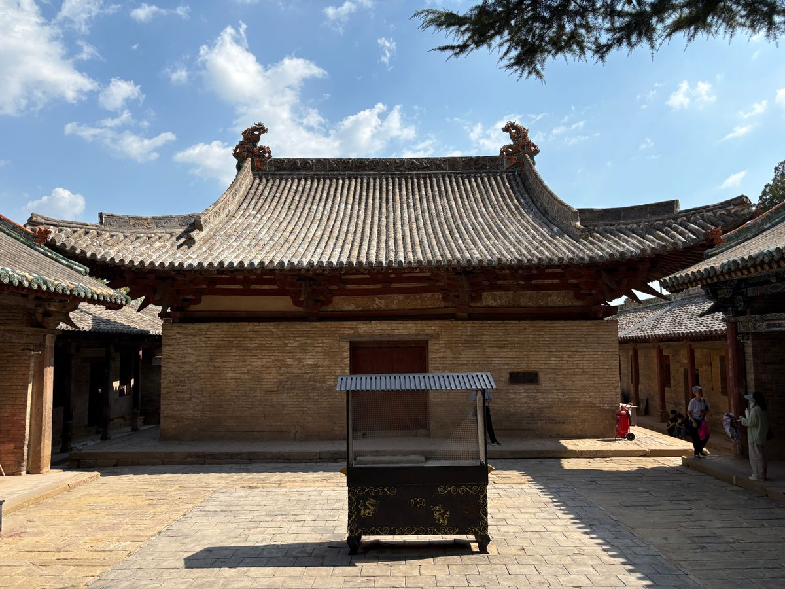
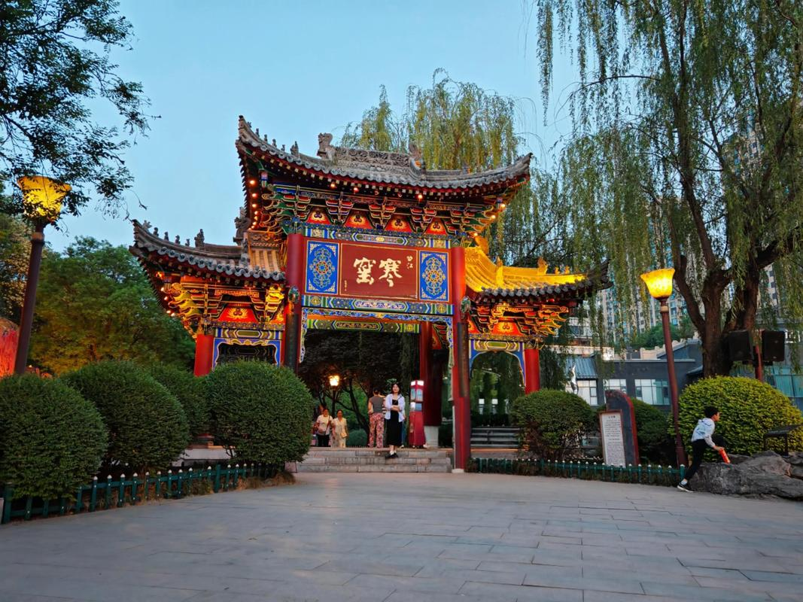
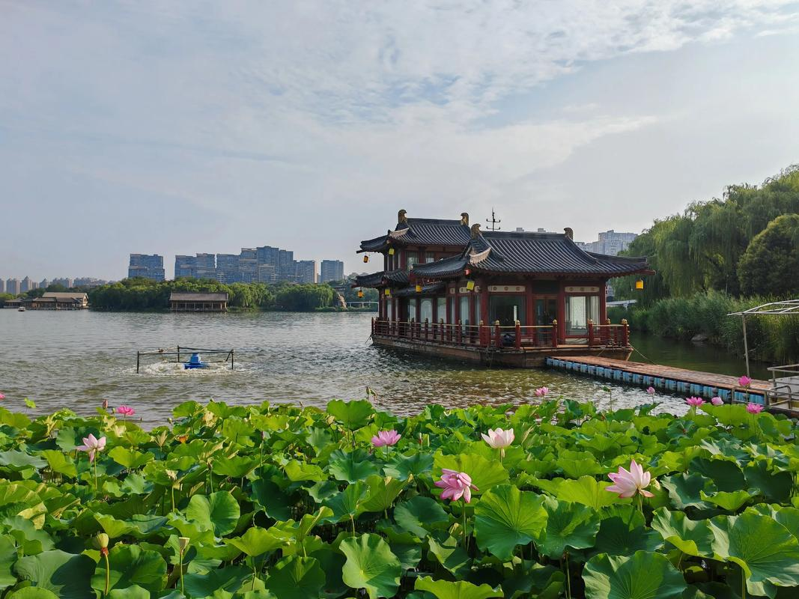
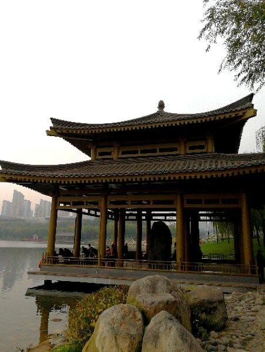
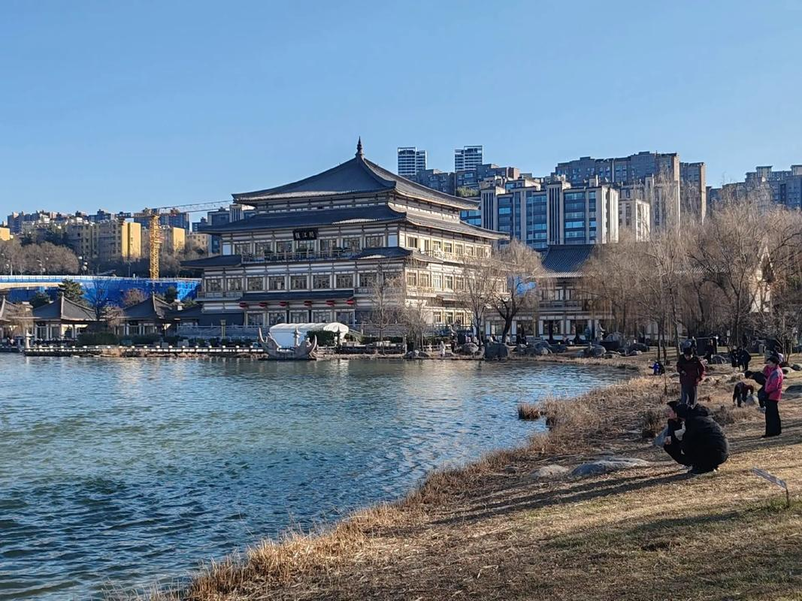

"曲江流饮"是关中八景中最具盛唐气象的一景。唐代科举放榜之后，新科进士们齐聚曲江池畔，参加由朝廷举办的"曲江赐宴"——这是每一位唐代读书人梦寐以求的荣耀时刻。宴席间最重要的仪式便是"曲水流觞"：将盛满美酒的酒杯置于曲江池的蜿蜒水渠中，随水漂流，酒杯停在谁面前，谁便要饮酒赋诗。
这一传统源自东晋王羲之《兰亭集序》中的"流觞曲水"雅集，在唐代被制度化为科举庆典的一部分。能在曲江流饮中赋诗，意味着一个读书人正式进入了帝国的精英阶层。孟郊46岁中进士后所作"春风得意马蹄疾，一日看尽长安花"，正是策马游曲江时的豪情万丈。白居易27岁中进士后更是意气风发地在雁塔题名，在曲江赋诗——"雁塔题名"与"曲江流饮"共同构成了唐代进士的终极荣耀。

曲江池是一处天然湖泊，秦汉时期即为皇家苑囿。隋代修建大兴城时，将曲江纳入城市水系，引终南山黄渠水注入池中，使之成为长安城东南角的一颗明珠。唐代更是在此大兴土木，环池修建了芙蓉园、杏园、紫云楼等大量亭台楼阁，使曲江成为集皇家园林、公共游赏和文化庆典于一体的城市公共空间——这在当时是世界罕见的。
唐末战乱后，曲江池逐渐淤塞荒废。2008年，西安市在唐代曲江池遗址上重建了曲江池遗址公园，湖面恢复至约700亩，环湖修建了曲江亭、阅江楼、荷花池等景点。尽管今日的曲江池已不是唐代模样，但湖光柳色之中，仍能想见千年前"曲水流觞"的盛景。
"及第新春选胜游，杏园初宴曲江头。紫毫粉壁题仙籍，柳色箫声拂御楼。" —— 唐·刘沧《及第后宴曲江》



| 地址 | 西安市曲江新区曲江池东路（曲江池遗址公园） |
|---|---|
| 开放时间 | 全天开放 |
| 门票 | 免费 |
| 交通 | 地铁 4 号线大唐芙蓉园站，向南步行约5分钟 |
| 小贴士 | 曲江池遗址公园、大唐芙蓉园、大唐不夜城、寒窑遗址公园连成一线，可安排半日至一日步行游览；春季湖边柳色最美，与"曲江流饮"的诗意最合 |